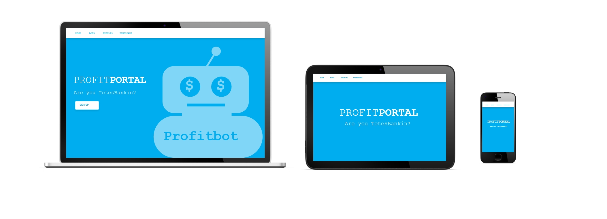
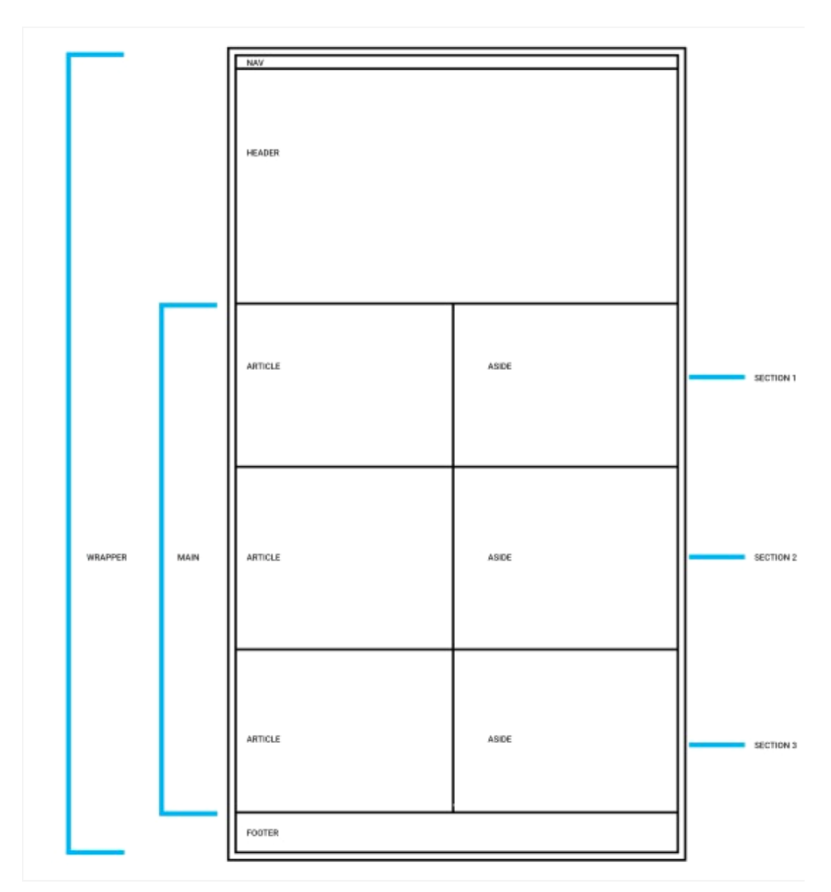
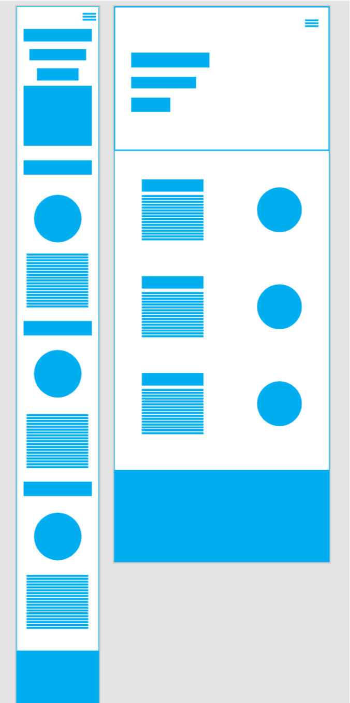

Class project for General Assembly HTML, CSS, & Web Design circuit. This circuit focuses on combining art and craft by using the same tools as professional web designers and front-end developers.

Design Foundations
This focused on understanding how design works and how to optimize this for the web. I learned foundational design principles and tools, the iterative design process, and how to create design mock ups. In addition, we reviewed the basic elements of graphic design and the importance of designing elements in non-linear environments.
Web Design Basics
Since people on the web tend to want information quickly, I learned how to communicate clearly, and make the information I design easy to read and digest. We reviewed the importance of legibility and readability to mediate text-based communication. How the use of color on the web can create, entice, or repel users.
Page Structure & Layout
The page structure & layout focused on how to design complex, modern sites and how to balance layout for content and navigation.

Media Queries & Responsive Design Development
I learned how to design responsive sites and learned the best practices for user experience on web versus mobile.

Final Project
For the final project I completed a responsive website for Profit Portal. This circuit was a great learning experience and will help me as I continue to work on designing products & user experiences.